This opener invented by ufo dude is an opener that is used for fun. It can only be used on tetr.io, as it has a 180 kick.
L first
J first
The goal of bag 3 is to block the yellow squares so the player can preform the 180 spins.
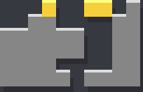Examples:
this version of ufopener is too high, and requires too many pieces. only do this on newbies.
the first 2 bags are the same as in the regular ufopener
you must have these pieces on the right
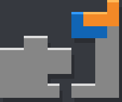you can also do this
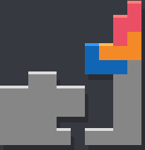it's rare that you'll be able to make the whole setup with a single bag
it's even more rare to be able to set it up like this
it's easier if you can do this
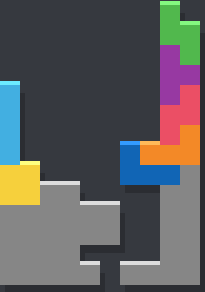but if you can't do that a common way to do it is like this, usually you'll have to give up trying to build it.
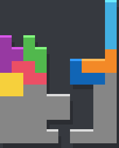remember to do this:
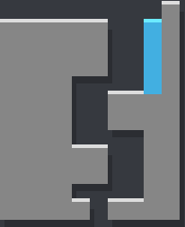otherwise this will happen:
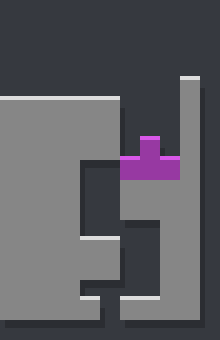aim to occupy the yellow squares
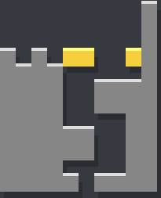there are many ways to do it
some situations that you might need to use
This extension was discovered by ufo dude, but elaborated on by WeirdBoi.
The first two bags are the same.
Note that you don't have to fill the sides explicitly like so, filling in the left side and covering the right works fine.
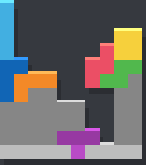Also note that bag 3 may not match up exactly. The only requirement is that you place the S piece like so.
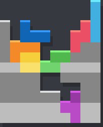 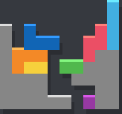